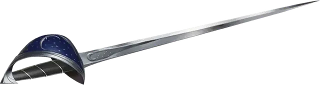

Осенённый луной меч
Moon-Touched Sword
Оружие (Глефа, Двуручный меч, Длинный меч, Короткий меч, Рапира или Скимитар), обычное

Рекомендованная стоимость 100 ЗМ
В Темноте извлечённый из ножен клинок этого оружия излучает лунный свет, создавая Яркий свет в радиусе 15 футов и Тусклый свет ещё на 15 футов.